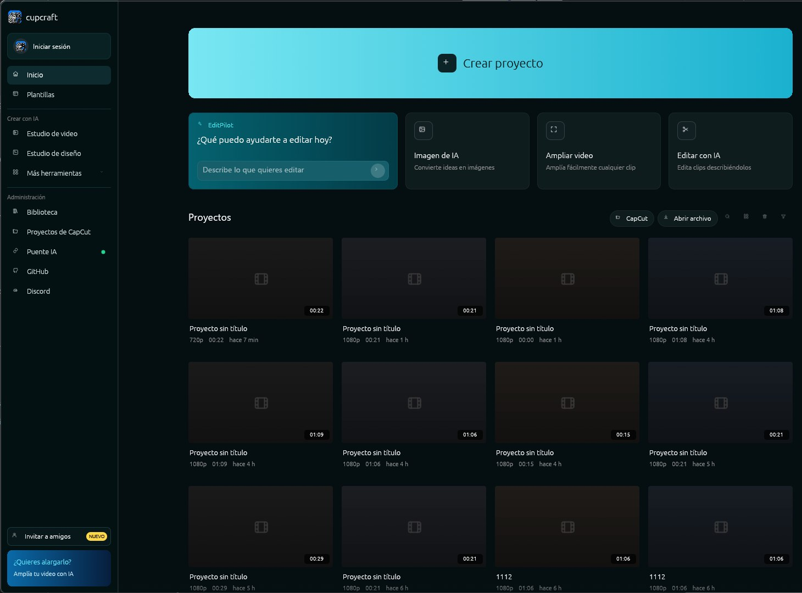

Voz con Piper
Escribe el texto y Piper lo lee con una voz en español, sin conexión.
cupcraft corta, compone y exporta tus vídeos con la tarjeta gráfica, sin cuenta ni nube. Es un solo ejecutable de 46 MB con voz e IA que corren en tu equipo.
Windows, macOS y Linux · Código abierto con licencia MIT

Arrastra los clips de la lista al timeline, coloca texto y audio en sus pistas y mira el resultado al momento: la GPU compone cada fotograma.
Ver las funciones
Escribe el texto y Piper lo lee con una voz en español, sin conexión.
Un modelo ONNX recorta a la persona del vídeo, fotograma a fotograma.
Whisper escucha el audio y coloca cada frase en su momento exacto.
FFmpeg viene dentro del ejecutable. cupcraft usa NVENC en NVIDIA, Quick Sync en Intel y AMF en AMD, y si no hay GPU codifica con el procesador.
Elegir tu descargaEmpezó el 27 de octubre como Cacup. Pasó por un lanzador en C++ con WebView2 y por C#, cambió de nombre y acabó reescrito en Rust para ser rápido y ligero.
46 MB
un solo ejecutable con FFmpeg, Piper y los modelos
0 €
gratis y de código abierto, licencia MIT
3
sistemas: Windows, macOS y Linux
0
cuentas, nube o telemetría
Abre el instalador: no pide permisos de administrador. Si Windows muestra SmartScreen, pulsa «Más información» y luego «Ejecutar de todas formas». Se actualiza solo.
Todas las versionesSí. Es código abierto con licencia MIT: sin pagos, sin marcas de agua y sin suscripción.
No. La voz, la IA y la exportación funcionan sin conexión. Solo busca actualizaciones si hay red.
El ejecutable no está firmado. Pulsa «Más información» y «Ejecutar de todas formas».
Importa borradores de CapCut en modo lectura. cupcraft no tiene relación con ByteDance ni CapCut.
No. Guarda solo en SQLite mientras editas y te pide guardar al cerrar.
Sí. Cada descarga se comprueba con SHA-256 antes de instalarse.